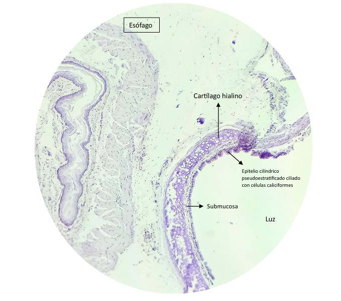
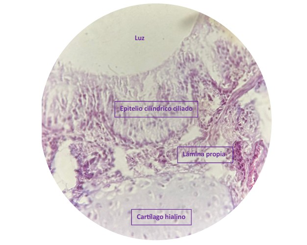
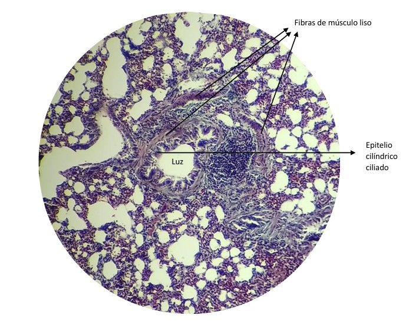
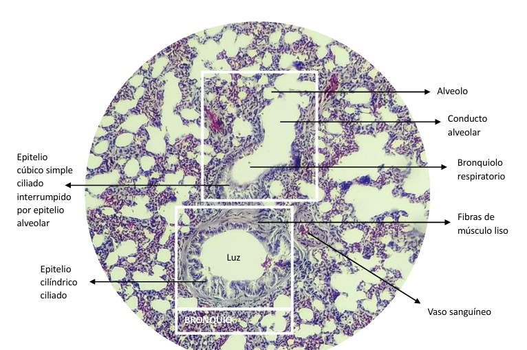
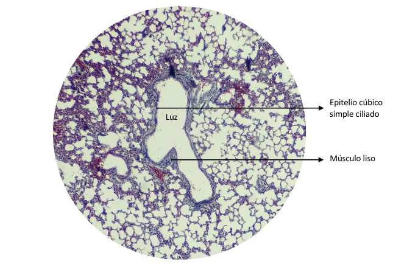
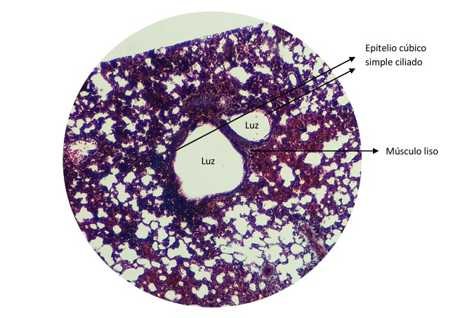

CITOLOGÍA GENERAL – HISTOLOGÍA DEL APARATO RESPIRATORIO
HISTOLOGÍA DE TRÁQUEA
- Epitelio cilíndrico pseudoestratificado ciliado con células caliciformes
- Membrana basal / Lámina propia
- Submucosa (Tejido conjuntivo + glándulas mixtas + vasos sanguíneos)
- Pericondrio
- Cartílago hialino
- Adventicia
OBSERVACIÓN DE MUESTRAS
- Muestra de Esófago + Tráquea (1) (Observación microscópica 4x)
(Observación microscópica 10x)

- Muestra de Tráquea (2)
HISTOLOGÍA DE BRONQUIO
- Epitelio cilíndrico pseudoestratificado ciliado con células caliciformes
- Lámina propia (Tejido conjuntivo)
- Músculo liso
- Glándulas (dispersas)
- Cartílago hialino (disperso)
OBSERVACIÓN DE MUESTRAS
Muestra de Bronquio (Observación microscópica 40x)

Muestra de Bronquio (2) (Observación microscópica 10x) → No presenta cartílago

HISTOLOGÍA DE BRONQUIOLO
| Tipo | Epitelio | Músculo liso |
|---|---|---|
| Pte. Dicho | Epitelio cilíndrico simple ciliado | 3–5 capas |
| Terminal | Epitelio cúbico simple ciliado | 2 capas |
| Respiratorio | Epitelio cúbico simple ciliado interrumpido por epitelio alveolar | 1 capa y discontinuo |
NO cartílago, NO glándulas
OBSERVACIÓN DE MUESTRAS
Muestra de Bronquiolo + Bronquio (Observación microscópica 10x)

Muestra de Bronquiolo (2) (Posible bronquiolo terminal) (Observación microscópica 10x)

Muestra de Bronquiolo (3) (Posible bronquiolo terminal) (Observación microscópica 10x)

DESCARGA (opcional)
Descargar PDF